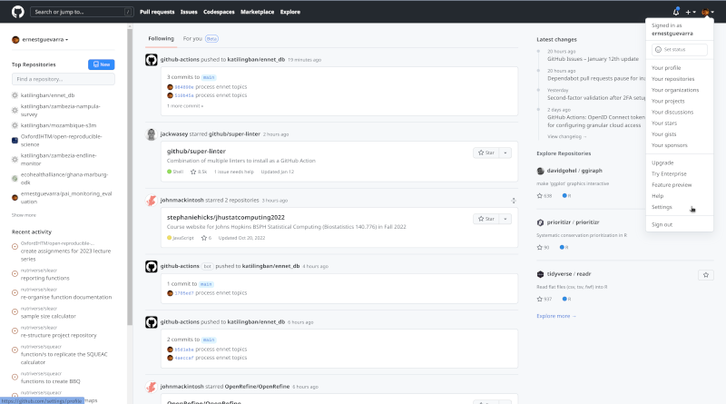
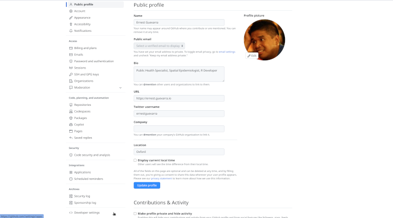
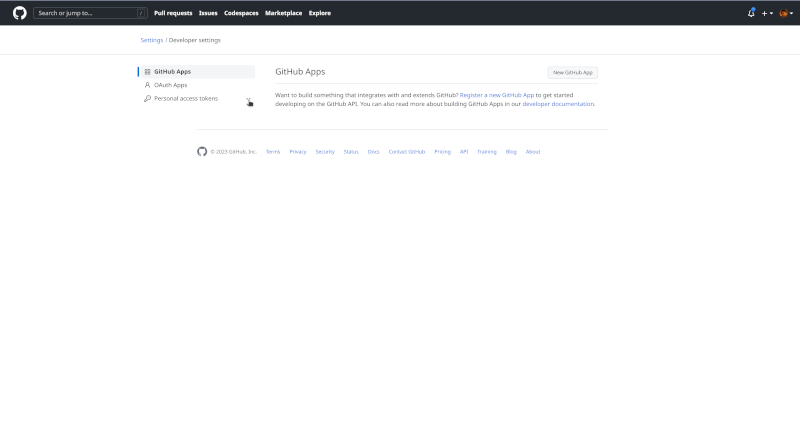
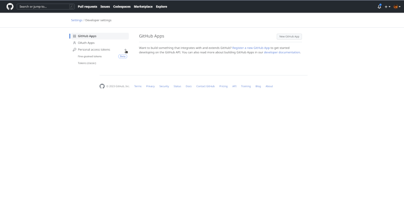
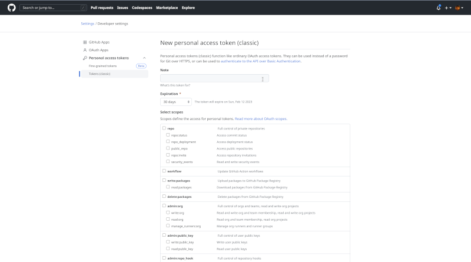
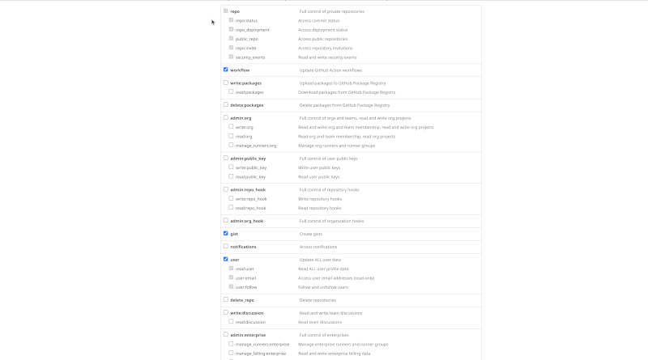
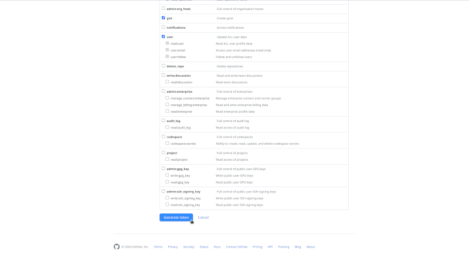

5 Connecting RStudio with GitHub
Once RStudio is installed and a GitHub account has been created and registered, the final step in the R, RStudio, git, and GitHub dance is to create git-related settings on your machine that will identify you as a unique/specific git user and then creating a GitHub personal access token (PAT) which will serve as the key or proof that you will use to identify yourself as the git user you claim to be whenever you try to syn/connect to your GitHub account via RStudio or any other tool on your local computer.
Follow are the steps you will need to perform:
- On your local machine, open RStudio and then select the
Terminaltab in the console pane.
The Terminal is the tool used to interface with your computer through commands written in a programming language called bash. Most of you would have never used the Terminal because the computers you use have different kinds of software built-in that provide a graphical user interface (GUI) that you can use to perform operations and tasks.
RStudio comes with the Terminal tool built in and usually is already available from the console pane as a separate table along side the R console (see below). By default, whenever you open RStudio, this tab for the Terminal tool should already be available.
If if is not present, you can easily open a new Terminal tab in the console pane by going to the RStudio menu ribbon and clicking on:
Tools --> Terminal --> New Terminalor you can use the ALT + SHIFT + R keyboard shortcut.
- Introduce yourself to git
In this step, you are basically going to issue a set of commands to your computer to save and store specific settings for the git software that you have installed.
Specifically, you are going to let git know who you are (your name) and what your email address is that is associated with your GitHub account.
The commands will be issued on the Terminal that we mentioned in step 1. The commands are:
git config --global user.name 'Jane Doe'
git config --global user.email 'jane@example.com'Make sure to supply your full proper name (and not your username you created in GitHub).
Make sure that the email you provide is the email address you used to register and create an account with GitHub.
Unless there was an error in your syntax, you should not expect any output on the Terminal after you issue the commands. To check that your name and email address have been recorded and/or that the name and email address recorded is correct, you can issue the following command:
git config --global --listHere is an example of what you will see after issue this command:
$ git config --global --list
user.name=Jane Doe
user.email=jane@example.comCheck this output to what you expect it to be specified as. If the information is correct, then you’ve completed this step. If you need to correct any of this information, then repeat this step making sure that the name and email address you provide is correct.
- Create a GitHub personal access token (PAT)
Now that you have introduced yourself to the git that is installed in your local machine/computer, you should now visit GitHub on a browser (https://github.com) and create a personal access token (PAT).
When you communicate/sync/interact with a remote git server, such as GitHub, you have to include credentials in the communication you are sending. These credentials prove that you are a specific GitHub user, who’s allowed to do whatever you’re asking to do.
git can communicate with a remote server using one of two protocols, HTTPS or SSH, and the different protocols use different credentials.
Here we describe the credential setup for the HTTPS protocol, which is what we recommend if you have no burning reason to pick SSH. With HTTPS, we will use a personal access token (PAT).
Please note that the personal access token (PAT) is not the same as the password you provided when registering for your GitHub account. Also, in performing a connection to GitHub via HTTPS protocol, your password is not an acceptable credential for communicating with GitHub as a server.
To create a GitHub personal access token (PAT), you need to:
3a. Go to Settings from your GitHub account menu
Login to your GitHub account. On the upper right hand corner of the GitHub page you will see your account icon. Click on it to reveal a drop down menu as shown below. Select the Settings option.

3b. From Settings navigate to Developer Settings
In the Settings page, find the Developer Settings option on the left hand sidebar as shown below:

3c. From Developer Settings navigate to Personal Access Token
In the Developer Settings page, find the Personal Access Token option on the left hand sidebar as shown below:

3d. Select Tokens (classic)

3e. Click on Generate new token
3f. Select Generate new token (classic)
3g. Give your token a name

The token name should be short but descriptive of the where or how you will use the token. Since we are using this to connect and allow communication between RStudio and GitHub, RStudio can be a good name that would remind you that this is what you are using to secure the connection/communication between your RStudio and your GitHub account.
3f. Set an expiry date for the token
By default, GitHub will set a 30 day validity for any new token created. Clicking on the option menu will show the other possible time periods to choose from including No expiry date.
It is best practice to assign an expiry date for security tokens such as the GitHub PAT. And a 30 day validity is standard practice. However, in reality, it is cumbersome to be creating new tokens frequently and for beginners, having to go through these steps again can be quite a chore. For the purposes of this lecture series, we would recommend setting the expiry for about 90 days to cover the whole period and then as a group, we’ll have a renew GitHub PAT party on our last session.
3g. Set scopes

Scopes are the types of permissions that you are attaching the token you are generating. This is again a security feature as takens should only be given specific and limited permissions based on what you intend the token to be used for. It is not good practice to give a token complete or unlimited permissions as you are exposing your account to high risk if and when your token gets compromised.
For general R users, the following scopes are currently recommended:
- repo
- workflow
- gist
- user
3h. Click on Generate token

After clicking you will now see a long string of characters and numbers which is your GitHub PAT. It is important to remember that once you see the generated GitHub PAT, you should copy this right away and store it securely. Treat your GitHub PAT in the same way you would treat your password for online accounts. The best way to securely store the GitHub PAT is using a password manager (LastPass, 1Password, BitWarden). If you have a macOS computer, you can save your GitHub PAT into your computer’s keychain.
Non-secure password/token storage practices that has been done by other students before are:
- Email their password/token to themselves
If you are using free email services such as Gmail, then this is a hihly non-secure method. Others use their University of Oxford email address and argue that this is secure compared to using the free email services. Whilst it is true that a university email account is more secure, email communications and email storage is still one of the most vulnerable places to keep something that is meant to be kept secret.
Paste the token into a Word document and save in personal computer with the filename GITHUB_PAT.docx
Paste the token into a Word document and save in Dropbox or in Google Drive
Please AVOID these methods.